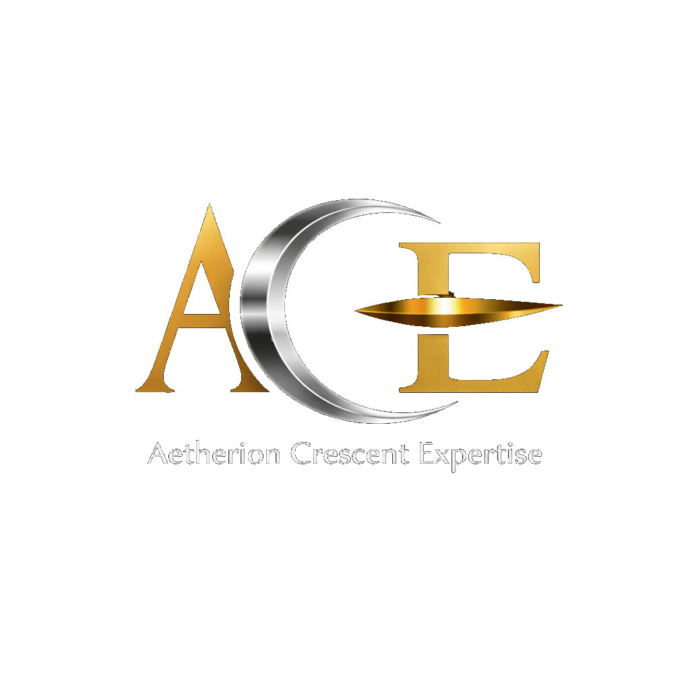

Aetherion Crescent Expertise is a Greek single-member private capital company (ΙΚΕ) founded and operated by Ioannis Tyrmpakis. The company was established with a clear purpose: to provide organisations with access to senior-level consulting expertise without the overhead, bureaucracy, or dilution of quality that often comes with larger firms.
The name reflects the spirit of the practice: Aetherion — from the ancient Greek concept of the upper sky, the realm of clarity and light — and Crescent, symbolising growth, momentum, and the constant pursuit of what comes next. Together they represent a consultancy that operates at a higher level of thinking while remaining in perpetual forward motion.
Headquartered in Greece and operating within the European Union, Aetherion Crescent Expertise brings together three disciplines that are too often siloed: project management, ServiceNow platform expertise, and IT service management advisory. This convergence is deliberate — because the most complex organisational challenges rarely sit neatly within a single domain.
We work with organisations across Europe, the Middle East, and beyond — engaging as embedded consultants, strategic advisors, or project leads depending on what each client needs most. In every case, the commitment is the same: expert thinking, disciplined delivery, and outcomes that last.
Ioannis Tyrmpakis is the sole founder and managing director of Aetherion Crescent Expertise IKE. His career has been built at the crossroads of enterprise service management, structured project delivery, and organisational transformation — bringing a rare combination of technical depth, strategic clarity, and hands-on execution to every engagement.
His professional journey spans the full lifecycle of enterprise programmes — from strategy definition and framework adoption through to platform implementation and continual improvement. He has led complex ServiceNow deployments, embedded ITIL 4 practices across organisations, and steered high-stakes projects from conception to closure across multiple industries and geographies.
Combining European rigour with an international perspective, Ioannis serves clients who require not just advice, but measurable outcomes — delivered with the discipline and accountability of a practitioner who has lived every challenge he advises on.
Whether you have a specific challenge in mind or simply want to explore how we might work together — we'd love to hear from you.